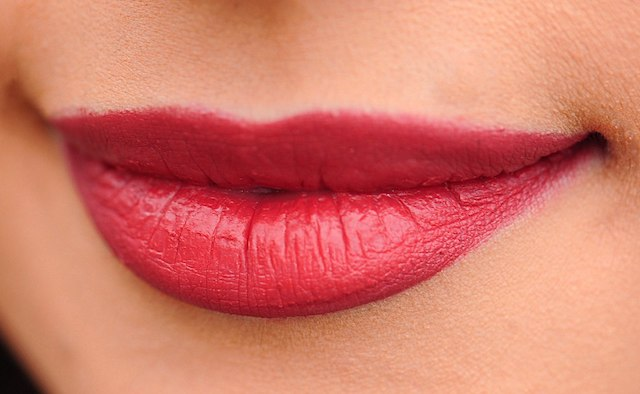
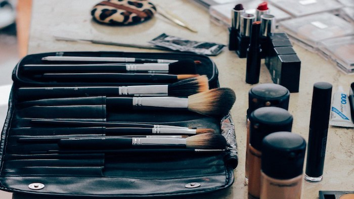
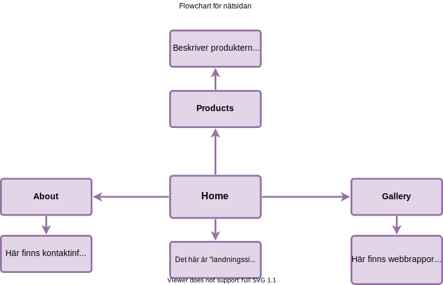
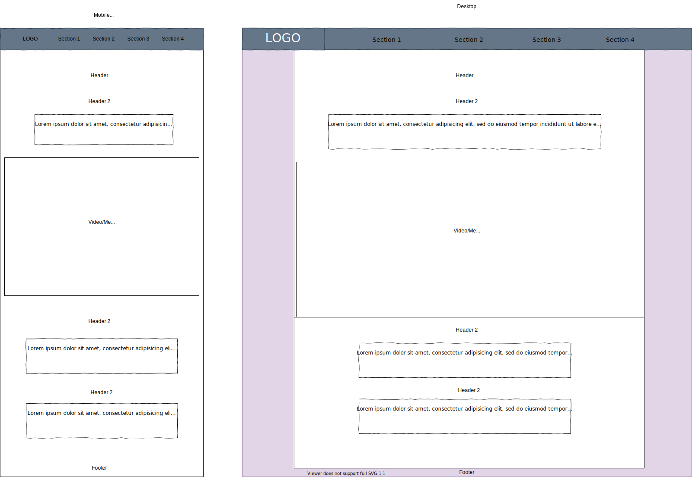
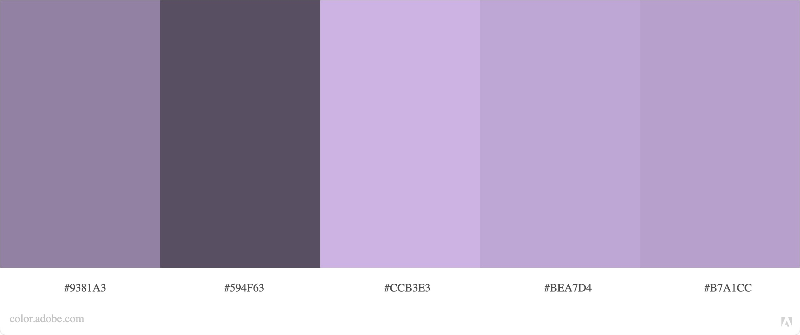
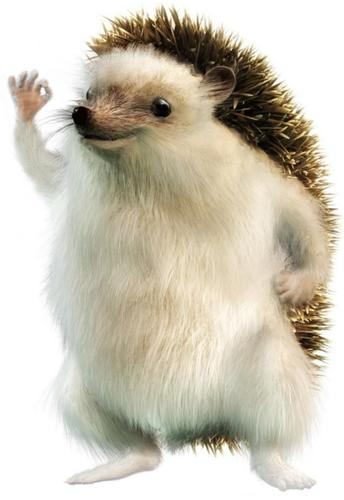

Gallery
Here you'll find our beautiful gallery, with photos we most definitely took ourselves.
You'll also find my "Webbrapport" here.
The only part of this website that's in Swedish.




Webbrapport
Här hittar Dennis sitt onödiga och föråldrade iframe galleri.
Inga thumbnails tyvärr.
Lipstick,
Brushes,
Customers,
Brushes with bokeh
Specifikation
Som fiktiva kund har i arbetet används ett fiktivt kosmetik företag med namnet “Makeup Monkey”.
Kunden söker efter en minimalistisk men klar nätsida som är lätt att navigera och hitta fram på.
“Makeup Monkey” som företag är kunden och målgruppen är kosmetik-intresserade och eventuella kunder som vill ha en klar nätsida som berättar grundläggande information om både de produkterna
som är till salu men också ger kunden en ide om hurdant företaget är och information om företaget med en simplistisk design.
För att åstadskomma nätsidans utseende har det imiterats en liknande stil till andra minimalistiska nätsidor och som exempel för huvumenyn har använts apple.com huvudmeny.
All navigering på sidan är mening att gå via huvudmenyn.
Som mål skulle det vara att nätsidan skulle fungera på både mobil- och som full nätsida,
och att nätsidan är tillgänglig från största delen av apparater som används, och nätsidan också fungerar på långsamt 3G.

Planering
För planering av layouter för nätsidan använde jag draw.io,
som slutligen blev ett väldigt effektivt verktyg för att få ut exakt en layout som liknande väldigt mycket det jag hade tänkt mig i huvudet. På draw.io satte jag ihop en mobil-vänlig version av nätsidan och en desktop sida.
Jag bestämde mig att logon skulle finnas uppe i vänstra knuten och navigationsmenyn på samma linje. Hemsidan skall ha en stor rubrik när man öppnar sidan och en video/bild genast efter, med kort information om företaget och vad de gör.
Gemensamt för alla sidorna är navigeringsmenyn och logon som också finns där. Layouten vill jag också att skall vara till stor del samma,
så att temat följer samma stil på alla sidorna. Färgerna skall också vara liknande för hela nätsidan. Jag använde Adobe:s färghjul och funderade vilken färg som skulle kunna passa till en nätsida som säljer kosmetik. Slutligen blev färgen en ganska neutral
“lila” färg (RGB 189, 166, 211) för bakgrunden på sidan och huvudmenyn blev en mörk grå,
men endå inte helt svart för att inte ha för stor kontrast (RGB 36, 37, 37). Här finns också en länk till CSS filen. Nedan finns en färgkartan för färgstilen på bakgrunden (Färgen #B7A1CC nedan är bakgrundsfärgen) från Adobe:s färghjul och en design för layouten på både mobil och desktop.
Struktur och komponenter
Jag använde samma struktur och grund som vi redan jobbat med under lektionerna,
och bestämde bara att omvandla det vi hade från tidigare, till något som passar min kund. Jag implementerade section, nav, article, header och footer eller div för att få snyggare layout på sidorna. På nätsidan används samma CSS-fil för alla sidorna, så som vi gjort under lektionerna. CSS-filen har formats enligt inläggen på nätsidan och med de problem som uppkommit fixats för att få ett önskat slutresultat.
Som resultat av kundens önskemål har nätsidan strukturerats på ett minimalistiskt sätt, men utnyttjande bilder av olika slag och bland annat en logo som byter färg oändligt. Bilderna är också i rätt storlek och borde ladda upp lätt även på långsammare nätverk. Efter att ha hittat en del inspiration online för t.ex galleriet, kollade jag endå noga för att ta bort möjliga stilelement i HTML-koden.


CSS selektorer och klasser
CSS-filen för mina sidor, blev redan från början styrd mot en mera minimalistisk design. Inte bara för att det är lättare, men för att det var ett krav som den fiktiva kunden hadde för sidan. Det finns också bara en CSS-fil, för att det kändes lättast på det sättet att hitta i början en enhetlig design. Alla sidorna håller samman med design och struktur och det finns titel, rubrik, text samt länkar på varje sida.
Fonterna, färgerna och bakgrunden är också gjort med noggranhet och öga för kontrast skillnader och använts av fonter som passar bra ihop i både h1, h2 och i paragraferna. Alla fonterna har tagits från fonts.google.com
Sidnavigering, meny
Navigeringen på sidorna är ganska nära så logiskt och lätt som det går att ha. Huvudmenyn är stor och klar, och ser likadan på alla sidorna. Huvudmenyn är också responsiv och fungerar på både mobil och desktop, samt all media och bilder gör det också. Användaren ser också vilken sida hen befinner sig på med att en av de fyra alternativen i huvudmenyn blir understräckat. I iframe galleriet finns det också länker som leder till bilder.
Designmönster
På webbsidan har använts flera olika stilmönster som flexbox och float för att åstadskomma ett önskat utseende som är responsivt men modernt och fungerande. Webbsidan är tänkt ut så att all funktionalitet som finns på desktop, finns också på mobilen och tvärtom.
Webbsidan borde fungera också helt bra på en tablet, för en stor del av elementen och bilderna automatiskt byter storlek och behöver inte breakpoints utan bara andra funderingar i CSS. Dock finns breakpointerna vid ca 500, 700 och 900px för tre olika format.
Iframes och responsiva bilder
Webbsidan har två olika gallerier. En som jag själv infogat för utseendet och ett iframegalleri, som dock inte har thumbnails, är helt användbart.
Alla bilderna på webbplatsen är fungerande oberoende av storlek, och formateras lite annorlunda beroende om användaren befinner sig på mobil eller desktop. Bilderna på alla sidorna är också minskade till en storlek som är lätt att ladda när även på sämre nätverk, och borde fungera oberoende av formatet.
Ljud och Video
På framsidan, eller “home” sidan, finns en video, som intro för användaren, som är copyright free, och är filmad i landscape-mode, för att ingen vill se en video filmad i portrait-mode på ett företags hemsida. Videon är också nerskalad till en storlek med som gör den tillgänglig på också sämre nätverk. Användaren är också välkommnad med ljud som jag tyckte passade temat på nätsidan riktigt bra.
Kontrollerna för videon är dolda, men går som sagt att tas fram med högerklick.
Maps, CSS animering och SVG
Openstreetmaps som karta är implementerat på “About” sidan och visar “kundens” butik/anläggning, men i det här fallet har jag satt som plats Arcada bara som exempel.
Som animering har jag min logo som är en SVG som byter färg oändligt, från en färg till en annan. Jag har också ändrat “faviconen” i webbsidans tab till företagets logo och lagt namnet där samman för professionalism.
Webbrapport
Den här uppgiften var en av de mest intressant uppgifterna jag gjort under min korta tid på Arcada. Den här kursen har också fått mitt förstå bättre vad jag vill göra i framtiden. För mig har hela uppgiften säkert tagit närmare ca 30 timmar av fokuserat arbetande på egen tid.
Möjligen det största problemet var att få huvudmenyn se ut på ett önskat sätt i alla format, både på mobil, en tablet av någon form och desktop, men också att få logon att passa in med navigerinsvalen. En stor del av uppgiften gick ut på att bara lista ut vilket som hörs vart och hur saker och ting fungerar. Men för någon som inte kodat förrut i något format, var uppgiften som minst väldigt intressant och lärande, och känns som som om det här är något man kan ha väldigt stor nytta av i framtiden oberoende på vad man gör.
Innehållsmässigt var kursen en av de mest intressant och givande jag varit med om. Också en stor orsak jag funderat och planerat byte till IT. Undervisningen var bra på flera sätt och alltid bra känsla att komma på lektionerna fastän det gått på distans. Jag känner att jag har lärt mig grunderna till HTML5 och CCS3 och en grund för att fortsätta lära mig på egen hand. Powerpointerna var väldigt informerande och smart uttänkta med funktionaliteten. Och för första gången en undervisare som vet hur teknologi fungerar :3
Ifall jag borde få extrapoäng för något, skulle det säkert vara mina svaga men fungerande timecodes, min finurlighet på nätsidan, snygga och simplistiska stilval, och min vackra favicon.
